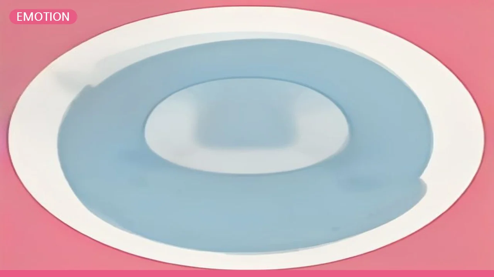

Understanding '존댓말' (Jondaetmal): Korean Honorifics and Politeness Levels
오늘의 표현 — 존댓말
표현: 존댓말
뜻: 한국어에서 상대방을 존중하거나 공손함을 나타내기 위해 사용하는 말의 형식입니다. 주로 상대방의 나이, 사회적 지위, 그리고 나와의 관계에 따라 다르게 쓰입니다.
사용 맥락: 처음 만나는 사람, 자신보다 나이가 많은 사람, 직장 상사, 혹은 공식적이거나 예의를 갖춰야 하는 상황에서 주로 사용합니다. 존댓말은 한국어 대화에서 기본적으로 지켜야 할 중요한 요소 중 하나입니다.
왜 영어로 직역이 안 될까?
영어를 비롯한 많은 서구 언어에는 한국어의 존댓말처럼 언어 체계 전반에 걸쳐 공손함의 정도를 조절하는 복잡한 시스템이 없습니다. 영어에서는 'Sir', 'Ma'am', 'Please', 'Excuse me' 같은 특정 단어나 정중한 어조를 통해 공손함을 표현하죠. 하지만 한국어 존댓말은 단순히 단어를 추가하는 것을 넘어, 동사 어미, 명사, 주격 조사 등 문장의 거의 모든 요소가 변화합니다.
가장 가까운 개념으로는 'honorifics'나 'polite language'가 있지만, 이 단어들로는 한국어 존댓말이 가진 사회적 위계와 관계를 섬세하게 반영하는 문화적 깊이를 온전히 담아내지 못합니다. 한국어 학습자들이 존댓말을 가장 어렵게 느끼는 이유도 바로 여기에 있습니다.
한국인은 어떤 상황에서 쓸까?
한국인들은 일상생활에서 정말 다양한 상황에서 존댓말을 사용합니다. 관계와 상황에 따라 아주 자연스럽게 존댓말과 반말(비격식체)을 오가죠.
-
처음 만난 사람에게: 버스 정류장에서 길을 물을 때, 카페에서 주문할 때 등 초면인 사람에게는 나이와 상관없이 존댓말을 쓰는 것이 기본 예의입니다.
예시) 손님: "아이스 아메리카노 한 잔 주세요." (카페 직원에게) 직원: "네, 알겠습니다. 잠시만 기다려주세요."
-
직장이나 공식적인 자리에서: 회사에서 상사나 동료에게 이야기할 때, 혹은 회의나 프레젠테이션처럼 공식적인 상황에서는 늘 존댓말을 사용합니다.
예시) 신입사원: "팀장님, 이 자료 언제까지 드리면 될까요?" (팀장에게) 팀장: "오늘 중으로 부탁드립니다."
문화 이야기
한국의 존댓말 문화는 오랜 유교 사상과 밀접하게 연결되어 있습니다. 나이와 지위를 중요하게 여기는 사회적 분위기 속에서 존댓말은 단순한 언어 형식을 넘어 상대방에 대한 존경과 배려를 나타내는 강력한 수단입니다.
또한, 한국 사회에서 사람들과 관계를 맺는 방식과도 깊이 관련되어 있습니다. 존댓말을 사용함으로써 서로에게 적절한 거리와 선을 유지하고, 예의를 지키는 것은 원만한 사회생활의 중요한 시작점이 됩니다. 존댓말을 잘 사용하는 것은 한국 사회의 중요한 미덕으로 여겨지기도 합니다.
여러분의 언어에서는 어떤가요?
여러분 나라의 언어에도 한국어의 '존댓말'처럼 상대방을 존중하는 특별한 표현이나 언어적 장치가 있나요? 있다면 한국어와 어떤 점이 비슷하고 또 다른가요?
혹은 한국어처럼 나이, 지위, 관계에 따라 말투가 완전히 달라지는 경험을 해보신 적이 있나요? 댓글로 여러분의 경험을 공유해주세요!
🔗 이 글도 함께 보면 좋아요: Why '섭섭하다' (Seopseop-hada) is More Than Just Disappointment